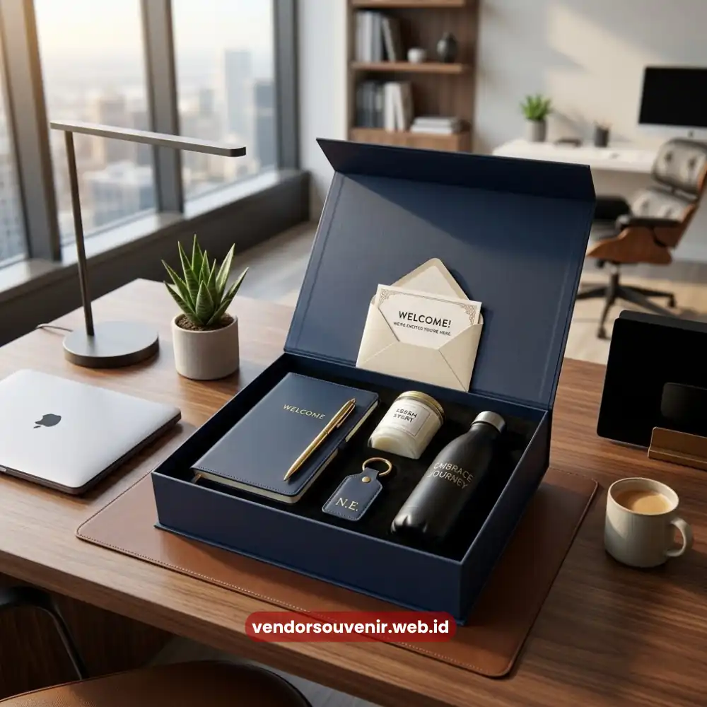

Daftar Isi
Welcome kit karyawan baru adalah paket sambutan berisi merchandise, alat kerja, dan item personal yang diserahkan perusahaan pada hari pertama karyawan bergabung.
Isinya biasanya mencakup seragam atau apparel branding, alat tulis, tumbler atau botol minum, hingga starter kit digital seperti flashdisk dan power bank.
Welcome kit yang dirancang dengan tepat mampu membuat karyawan baru merasa diterima, dihargai, dan lebih cepat menyatu dengan budaya kerja perusahaan sejak menit pertama.
- Welcome kit karyawan baru berfungsi sebagai first impression sekaligus alat employer branding.
- Kombinasi item fungsional dan personal memberi dampak emosional yang lebih kuat dibanding kit generik.
- Custom branding pada setiap item memperkuat identitas dan kebanggaan terhadap perusahaan.
- Anggaran welcome kit dapat disesuaikan mulai dari kebutuhan dasar hingga paket eksklusif korporat.
- Pemilihan isi kit sebaiknya mempertimbangkan budaya kerja, jenis industri, dan preferensi generasi karyawan.
Apa Itu Welcome Kit Karyawan Baru dan Mengapa Perusahaan Membutuhkannya?
Welcome kit karyawan baru adalah bentuk apresiasi awal yang diberikan perusahaan kepada individu yang baru bergabung.
Biasanya paket ini diserahkan pada hari pertama masuk kerja atau bahkan sebelum tanggal mulai kerja tiba.
Paket ini bukan sekadar seremoni administratif, melainkan bagian dari strategi onboarding yang dirancang untuk membangun kesan pertama yang positif.
Kebutuhan akan welcome kit semakin terasa penting seiring meningkatnya persaingan dalam menarik dan mempertahankan talenta terbaik.
Perusahaan yang menaruh perhatian pada momen-momen kecil seperti hari pertama kerja cenderung memiliki citra employer branding yang lebih kuat di mata calon karyawan maupun karyawan yang sudah bergabung.
Mengapa Welcome Kit Karyawan Baru Berpengaruh pada Semangat Kerja Tim?
Semangat kerja karyawan baru sangat dipengaruhi oleh bagaimana mereka diperlakukan pada fase-fase awal bergabung.
Welcome kit berperan sebagai simbol konkret dari apresiasi tersebut.
Ketika karyawan baru menerima paket berisi barang-barang berkualitas dengan sentuhan branding perusahaan, mereka merasa dihargai.
Mereka secara psikologis merasa bahwa keputusan mereka bergabung adalah keputusan yang tepat.
Efek ini dikenal sebagai validasi pasca-keputusan, yang penting untuk mengurangi kecemasan di hari-hari awal bekerja.
Selain aspek emosional, welcome kit juga memiliki fungsi praktis.
Item seperti notebook, alat tulis, atau starter kit digital langsung dapat digunakan karyawan untuk menunjang pekerjaan sehari-hari.
Sehingga mereka tidak perlu repot mempersiapkan perlengkapan dasar secara mandiri.
Apa Saja Ide Welcome Kit Karyawan Baru yang Paling Diminati?
Ide isi welcome kit karyawan baru sangat beragam dan dapat disesuaikan dengan anggaran, industri, serta karakter perusahaan.
Berikut beberapa kategori ide yang paling sering dipilih oleh tim HR dan procurement korporat.
Merchandise Fungsional untuk Kebutuhan Kerja Sehari-hari
Kategori ini mencakup barang-barang yang langsung terpakai dalam aktivitas kerja.
Misalnya notebook custom, pulpen premium, tumbler atau botol minum branding, tas laptop, hingga mousepad.
Barang-barang fungsional cenderung memiliki usia pakai yang panjang.
Sehingga logo dan identitas perusahaan akan terus terlihat setiap hari, baik di lingkungan kantor maupun saat karyawan membawanya ke luar kantor.
Sentuhan Personal yang Membuat Karyawan Merasa Dihargai
Selain barang fungsional, sentuhan personal seperti kartu ucapan selamat bergabung sangat penting.
Nama karyawan yang tercetak pada salah satu item, atau paket snack ringan turut memperkuat kesan hangat.
Pendekatan ini penting terutama untuk perusahaan yang ingin menonjolkan budaya kerja yang humanis dan tidak kaku.

Isi Welcome Kit yang Fungsional di Meja Kerja
Starter Kit Teknologi dan Aksesori Kerja
Untuk perusahaan berbasis teknologi atau yang banyak melibatkan kerja mobile, welcome kit dapat disesuaikan.
Kit ini dapat dilengkapi power bank, flashdisk branding, charger portable, atau earphone.
Kombinasi ini relevan bagi karyawan yang sering bekerja dari luar kantor maupun dalam skema kerja hybrid.
Kombinasi Seragam dan Identitas Visual Perusahaan
Seragam kerja, kaos polo, atau outer dengan bordir logo perusahaan kerap dimasukkan sebagai bagian welcome kit.
Hal ini khususnya untuk perusahaan yang menekankan keseragaman identitas visual tim.
Industri yang sering menggunakannya antara lain ritel, hospitality, atau layanan publik.
Bagaimana Cara Memilih Isi Welcome Kit Karyawan Baru yang Tepat?
Memilih isi welcome kit yang tepat sebaiknya mempertimbangkan karakter industri, profil generasi karyawan, dan tujuan branding.
Perusahaan di sektor kreatif misalnya cenderung memilih item dengan desain yang lebih ekspresif.
Sementara perusahaan di sektor korporat formal umumnya memilih desain minimalis dan elegan.
Selain itu, penting untuk memastikan setiap item memiliki kualitas produksi yang baik.
Barang dengan kualitas rendah justru dapat memberikan kesan terkesan asal-asalan alih-alih terlihat profesional.
Oleh karena itu, pemilihan bahan, teknik cetak logo, dan kerapian kemasan menjadi faktor yang tidak boleh diabaikan.
Berapa Kisaran Biaya untuk Welcome Kit Karyawan Baru Berkualitas?
Biaya welcome kit karyawan baru sangat bervariasi tergantung jumlah item, kualitas bahan, dan teknik branding.
Secara umum, semakin banyak jumlah pesanan, semakin efisien pula biaya per unit yang dikeluarkan perusahaan.
Perusahaan juga dapat menentukan paket bertingkat.
Misalnya paket standar untuk seluruh karyawan baru dan paket premium khusus posisi manajerial.
Dengan perencanaan anggaran yang matang, welcome kit tidak perlu menjadi beban biaya besar.
Kesalahan Umum saat Menyiapkan Welcome Kit Karyawan Baru
Beberapa kesalahan yang sering terjadi antara lain memilih barang yang kurang relevan dengan kebutuhan kerja.
Mengabaikan kualitas produksi demi menekan biaya juga merupakan kesalahan umum.
Serta tidak menyertakan sentuhan personal sama sekali sehingga kit terasa generik.
Kesalahan lain yang cukup umum adalah keterlambatan pengadaan, sehingga welcome kit belum siap pada hari pertama.
Untuk menghindari kendala tersebut, sebaiknya perusahaan merencanakan pengadaan jauh hari.
Pastikan proses produksi dan pengiriman dari vendor berjalan sesuai jadwal.
Welcome kit karyawan baru bukan sekadar formalitas, melainkan investasi kecil dengan dampak besar.
Dengan kombinasi item fungsional dan sentuhan personal, welcome kit membangun employee experience yang positif sejak hari pertama.

Wujudkan Welcome Kit Karyawan yang Berkesan!
Tim kami siap membantu Anda menyusun paket onboarding eksklusif sesuai budget perusahaan.
Bangun citra positif dan tingkatkan semangat kerja tim dengan merchandise berkualitas.
Dapatkan katalog produk welcome kit kami secara gratis!
FAQ Seputar Welcome Kit Karyawan Baru
Apakah welcome kit karyawan baru wajib diberikan oleh semua perusahaan?
Welcome kit tidak bersifat wajib secara hukum, namun sangat direkomendasikan sebagai bagian dari strategi onboarding dan employer branding untuk meningkatkan kesan pertama karyawan baru.
Kapan waktu terbaik untuk menyerahkan welcome kit kepada karyawan baru?
Waktu terbaik adalah pada hari pertama karyawan bekerja, atau bahkan sebelum tanggal mulai kerja jika memungkinkan, agar karyawan sudah merasa dihargai sejak sebelum resmi bergabung.
Apakah welcome kit harus selalu berisi barang custom branding?
Tidak selalu, namun barang dengan custom branding logo perusahaan umumnya lebih efektif memperkuat identitas dan rasa memiliki karyawan terhadap perusahaan.
Berapa jumlah minimal pemesanan welcome kit untuk perusahaan?
Jumlah minimal pemesanan bergantung pada kebijakan masing-masing vendor souvenir dan jenis produk yang dipilih, sehingga sebaiknya dikonsultasikan langsung sesuai kebutuhan perusahaan.
Apakah welcome kit dapat disesuaikan dengan anggaran terbatas?
Bisa. Welcome kit dapat disusun secara bertingkat, mulai dari paket dasar dengan item esensial hingga paket premium, sesuai anggaran yang tersedia bagi perusahaan.
Dengan memberikan welcome kit yang berkesan, Anda tidak hanya menyambut karyawan baru, tetapi juga menginspirasi semangat kerja dan loyalitas jangka panjang.
Maroon Souvenir
Partner Corporate Gift terpercaya di Indonesia. Berpengalaman melayani ratusan perusahaan sejak 2018.
Lihat Portofolio Kami